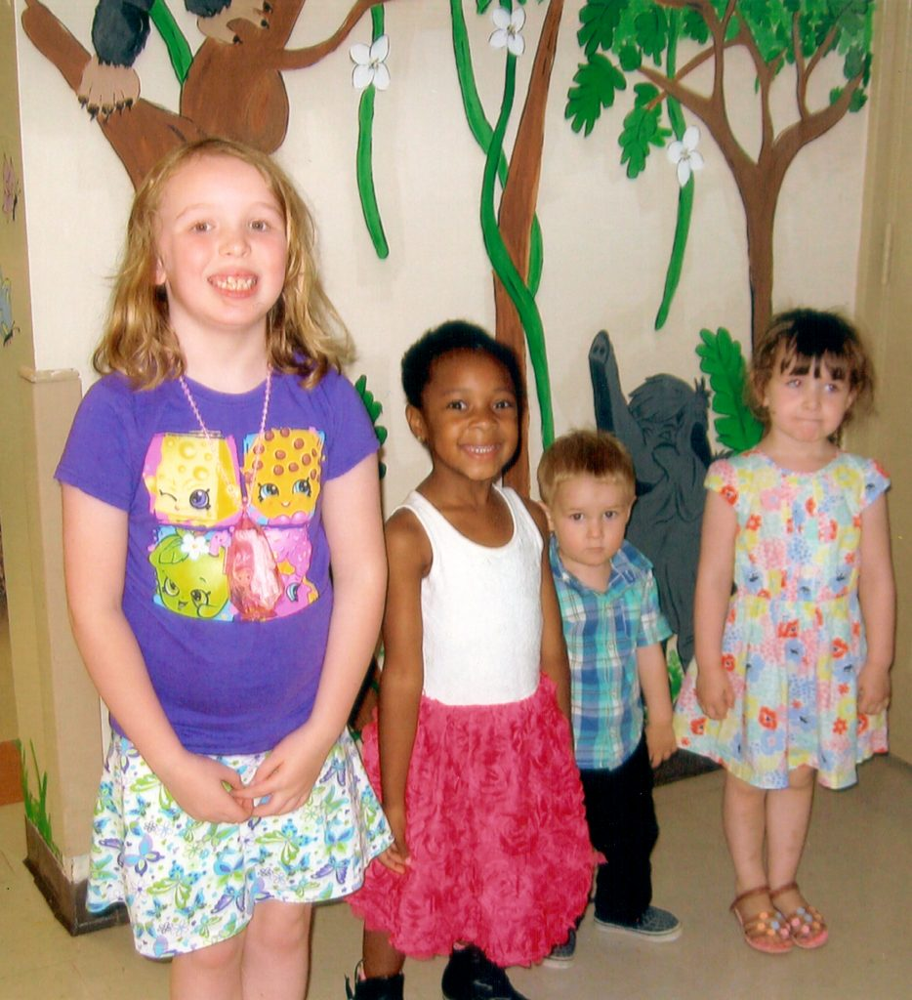
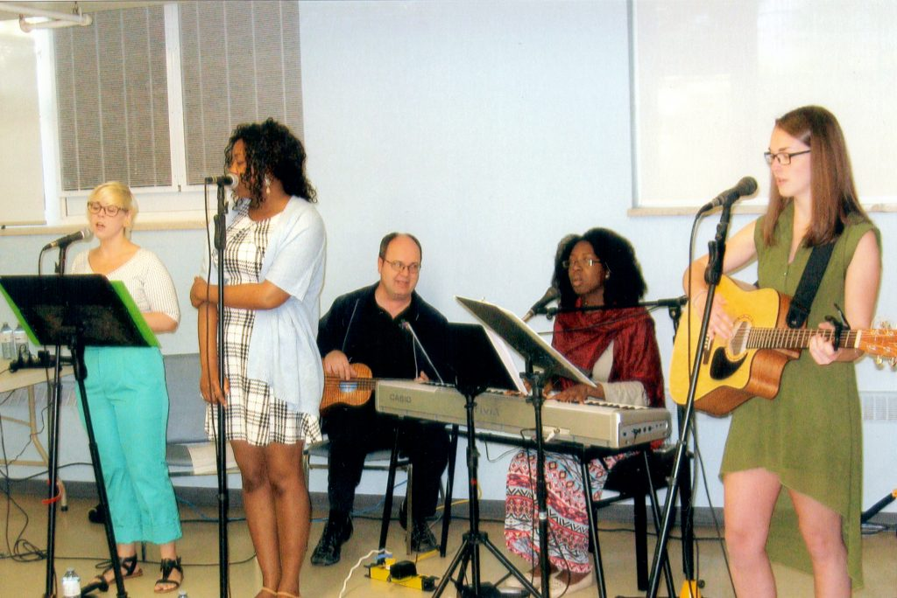
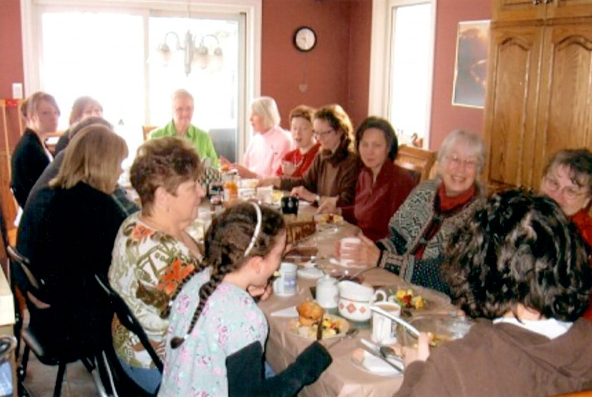
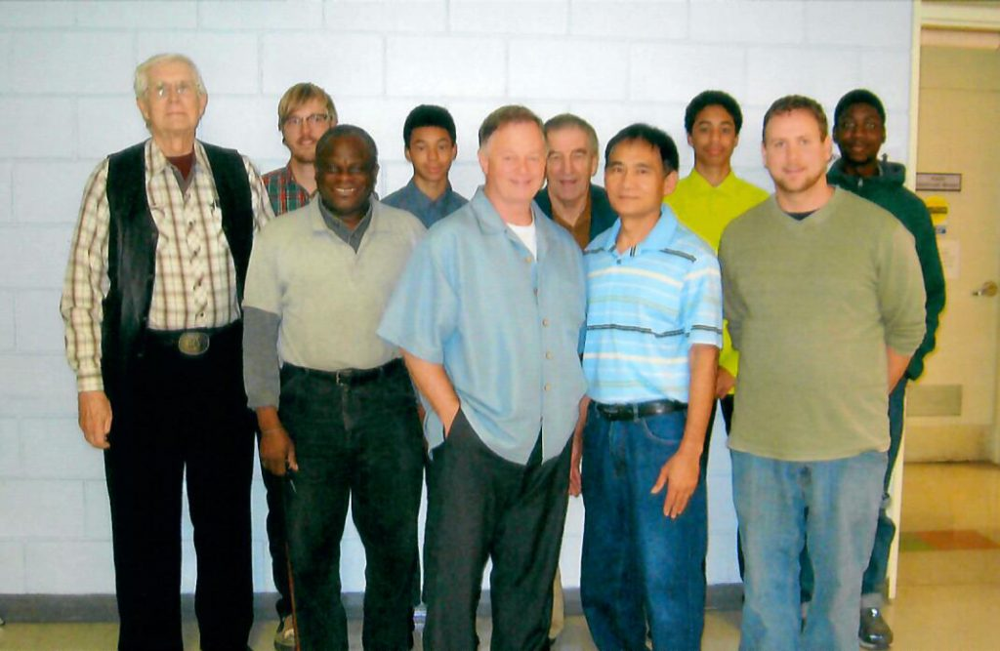
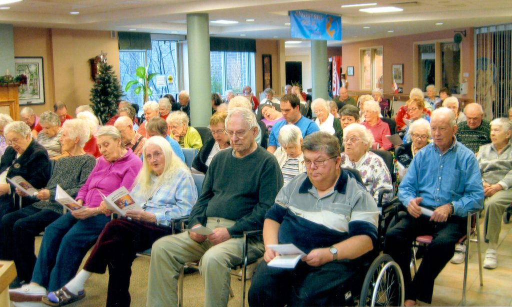
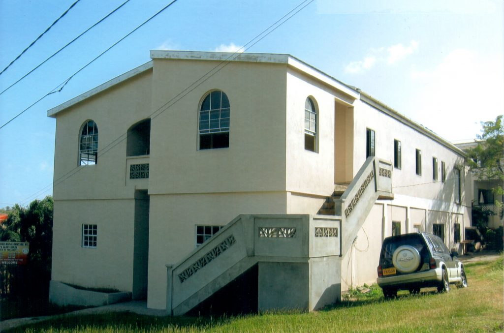

Our Ministries
These ministries are drawn from Abiding Place’s own published history. Current schedules and leaders should be confirmed with the church.

Children’s Ministry
Children’s church is described as interactive and centred on helping children know the Father’s love through music, games, drama, crafts and Biblical teaching.

Worship Ministry
A varied team of worship leaders brings hymns and contemporary music, seeking to follow Holy Spirit and help the congregation worship in spirit and truth.

Women’s Ministry
Women of different ages and seasons of life are encouraged to grow in Scripture, relationship with Christ and supportive fellowship with one another.

Men’s Ministry
The men’s ministry emphasizes relationship, encouragement, integrity and spiritual growth in the home, church and wider community.

Bible Study and Prayer
Bible studies gather Tuesdays at 10:00 a.m. and Wednesdays at 7:00 p.m. at the Mel Lloyd Centre, Door “F”. Contact the church for the current books or themes.

Legion Ministry
Rev. Gord Horsley has publicly served as Padre with Royal Canadian Legion Branch 220, offering encouragement, pastoral care, hospital visits, funerals and support at commemorative services.

Seniors Ministry
The church’s published ministry includes fellowship with residents of Dufferin Oaks, weekly devotions, participation in services and chaplaincy support.

Missions and Partnerships
Abiding Place has published mission relationships involving Grenada, Haiti, Uganda and international ministry partners, alongside local Christian networks and community service.
Would You Like to Connect or Serve?
Ask about the ministries currently meeting, volunteer requirements and the best next step for you or your family.
Contact the Church